Прямые поставки без лишних посредников — проще держать маржу и конкурировать.
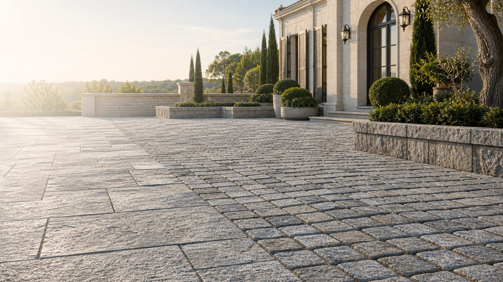
Для дилеров, строителей и ландшафтных бюро
Натуральный камень напрямую от производителя
Поставляем тротуарную и облицовочную плитку из собственного карьера для дилеров, строителей и ландшафтных бюро. Стабильные партии, понятные сроки и конкурентная цена.
В поставке
Собственный карьер
Оптовые партии
Доставка по РФ
Повторяемая фактура, понятные сроки и поставки под регулярные заказы.
Натуральный камень выглядит дороже бетона и помогает дилеру продавать выше среднего чека.
Производство
Производство полного цикла
От добычи камня в собственных карьерах до готовой продукции для архитектурных и ландшафтных проектов.
Калужская, Ростовская и Смоленская области.
В составе холдинга «Донской камень».
Добыча, обработка, отбор и упаковка под единым контролем.
Широкий ассортимент натурального камня и обработок.
Обработки
Доломитовый камень в четырех вариантах обработки
Доломит подбирается под архитектуру объекта: от строгой современной геометрии до эффекта старинной европейской мостовой.
Бордюрный камень
КБР из доломита
Пиленый бордюрный камень для дорожек, въездных групп, площадок и ландшафтных линий. Сохраняет общий материал объекта и аккуратно завершает мощение из доломита.
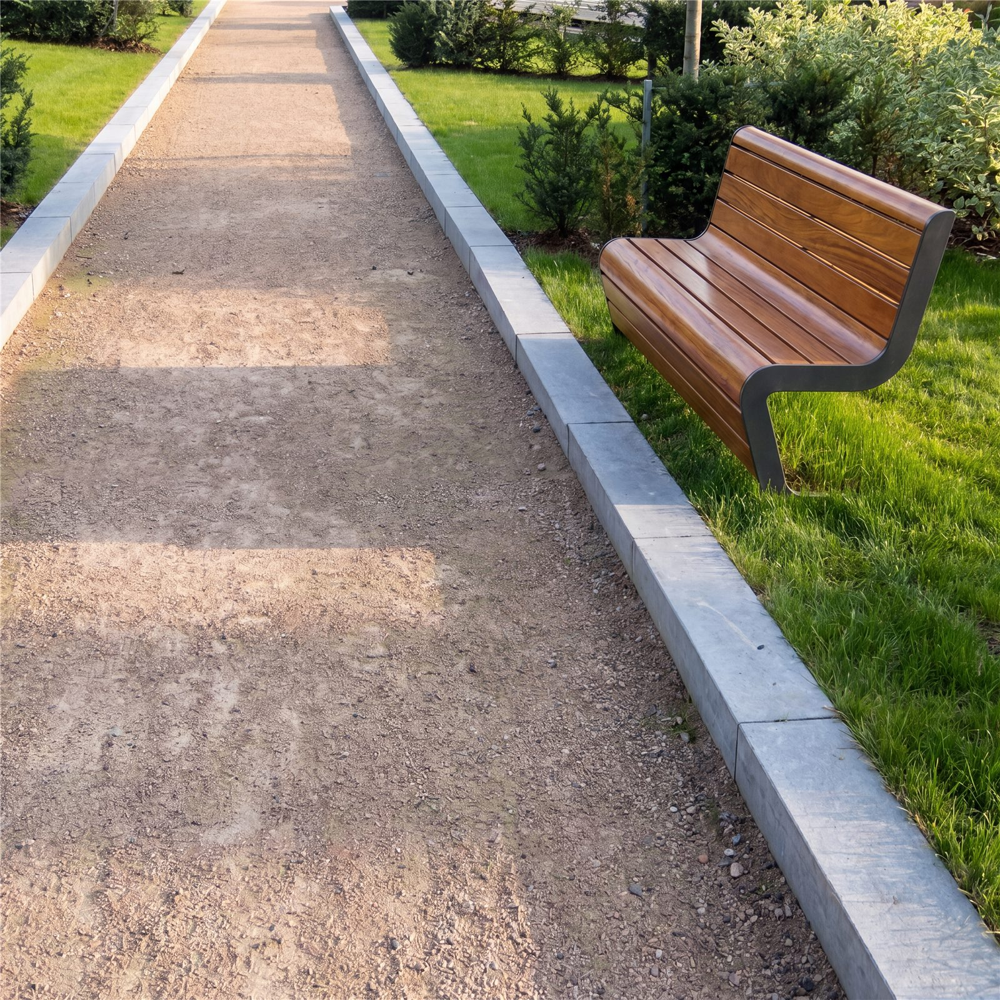
Доломит
КБР без фаски
Строгий пиленый формат для прямых линий, въездов и мощения в современной архитектуре.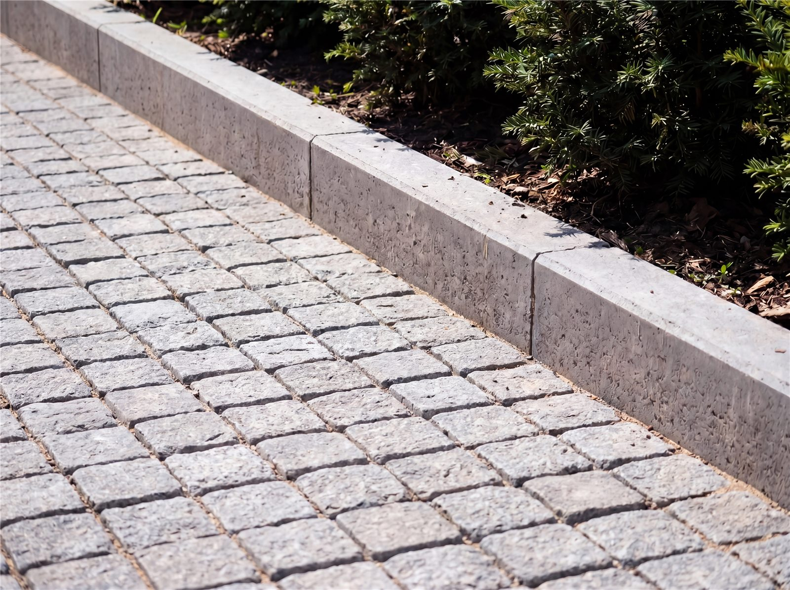
Доломит
КБР с фаской
Более мягкий визуальный край для дорожек, террас, дворов и благоустройства частных объектов.Песчаник
Плитка, плитняк и галтованная плитка
Отдельная линейка песчаника для природной укладки, облицовки, садовых дорожек и теплых ландшафтных решений. Материал подходит для объектов, где нужна более живая фактура камня.
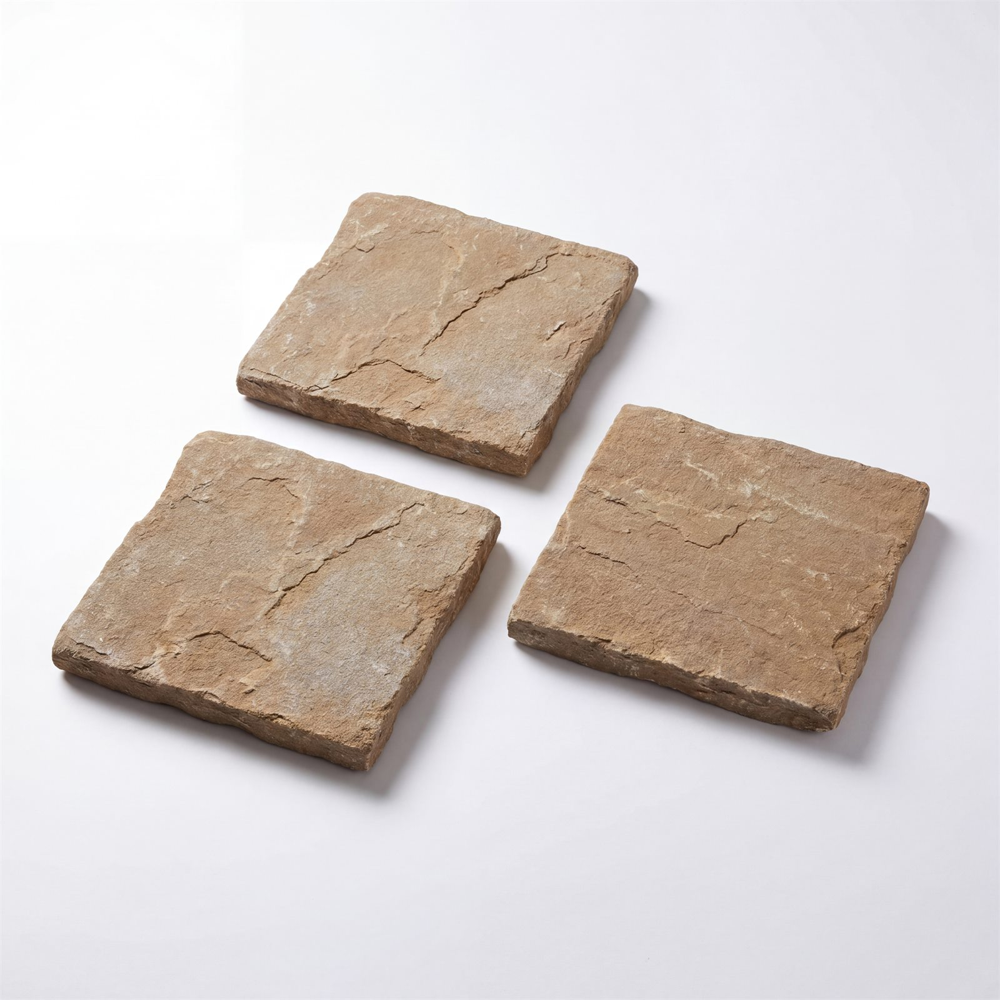
Песчаник
Плитка
Форматная плитка с природной фактурой для дорожек, площадок, садовых зон и облицовки.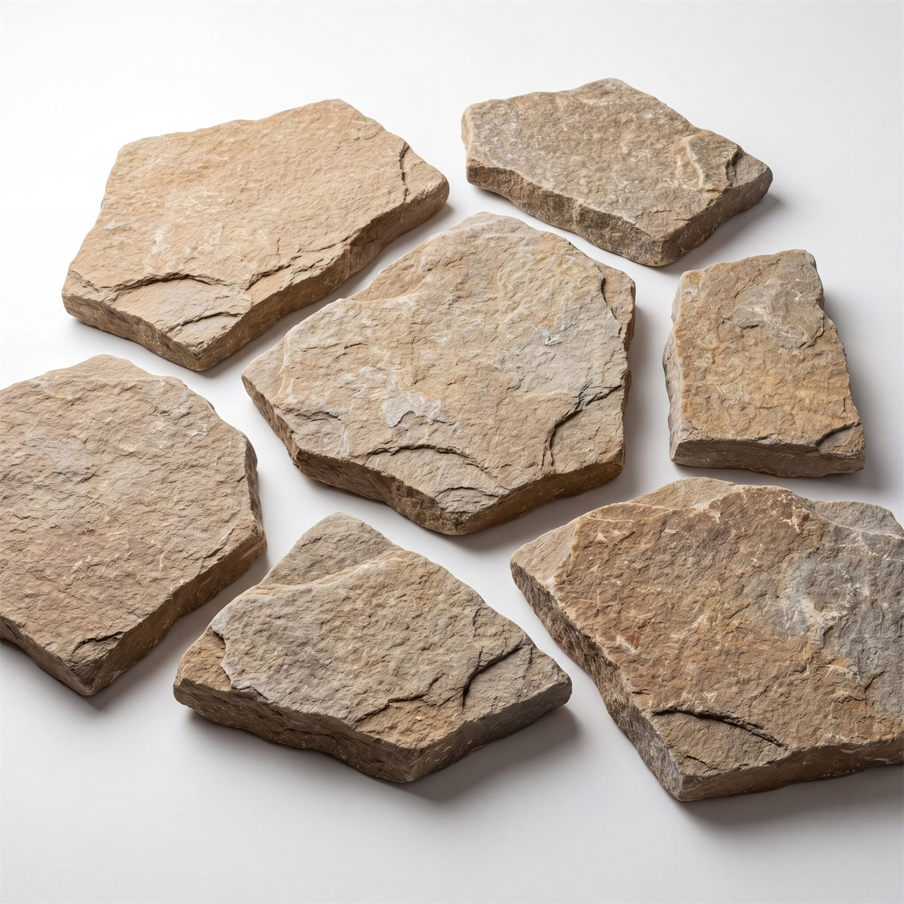
Песчаник
Плитняк
Плоский камень для мощения, фасадных решений, цоколей и декоративных поверхностей.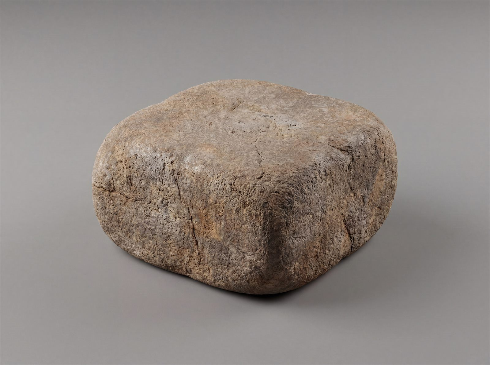
Песчаник
Галтованная плитка
Смягченная фактура для мощения с эффектом выдержанного натурального камня.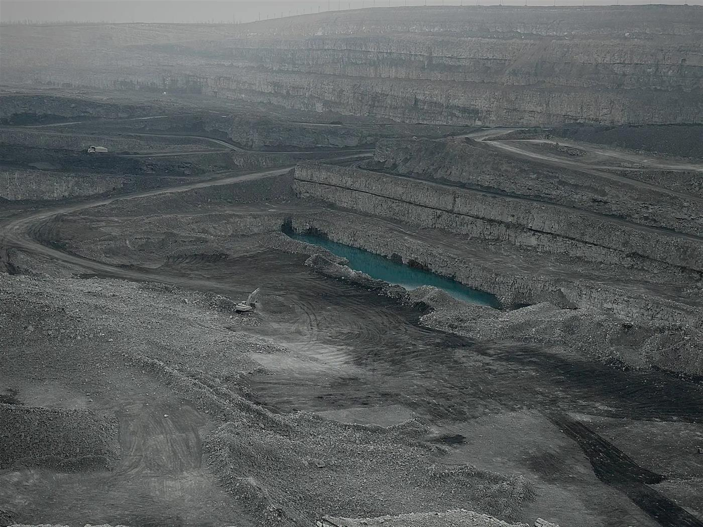
Собственный карьер
Происхождение камня контролируется с первого блока
Собственный ресурс дает прогнозируемый цвет, стабильную фактуру и поставки без случайности. Для дилеров, строителей и архитекторов это означает понятные сроки, честную себестоимость и повторяемое качество.
100+ позиций в прайс-листе
4 ключевые обработки
8 800 505-76-30
Каталог и прайс
Форматы, обработки и цены производителя в одном месте
В материалах Forma DK уже собран каталог брусчатки: полнопиленная, колото-пиленная, галтованная, обработка «Аура», а также бордюрные форматы КБР.
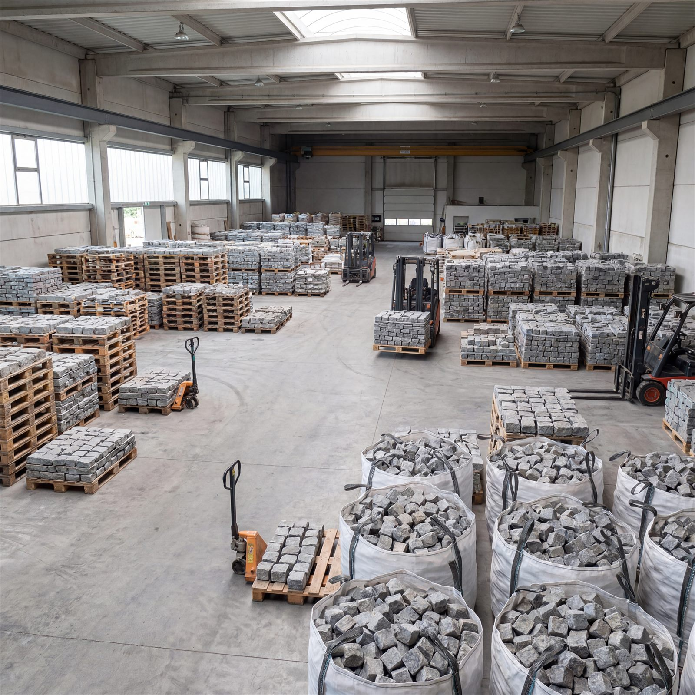
Применение
Камень, который усиливает статус объекта
Входные группы, террасы, дворы, подъездные аллеи
Теплый серый камень держит архитектуру спокойно и дорого.
Площади, тротуары, пешеходные улицы, набережные
Фактура натурального камня стареет благородно, а не устает визуально.
Элитные ЖК, клубные дома, общественные пространства
Материал сразу считывается как капитальный и долговечный.
Реальная укладка
Галтованная фактура в архитектурной среде
Такие снимки важны для сайта: они показывают не склад и не отдельный образец, а то, как камень работает рядом с фасадом, зеленью, старой кладкой и светом.
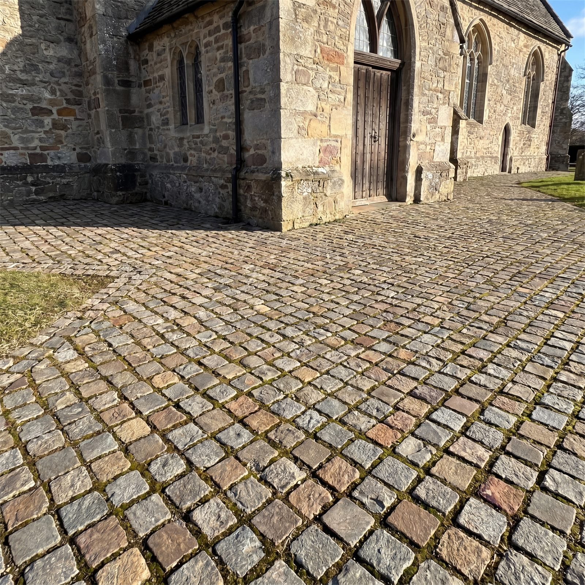
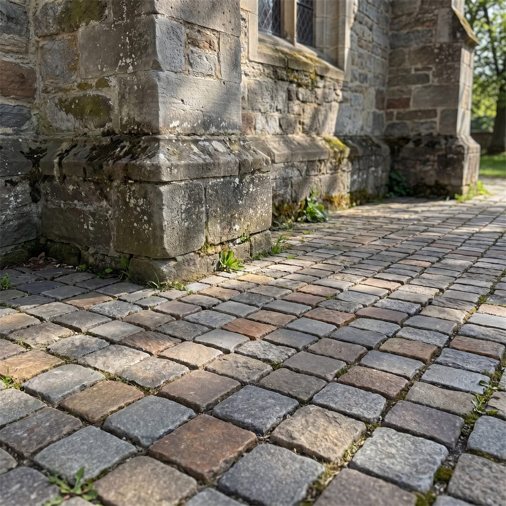
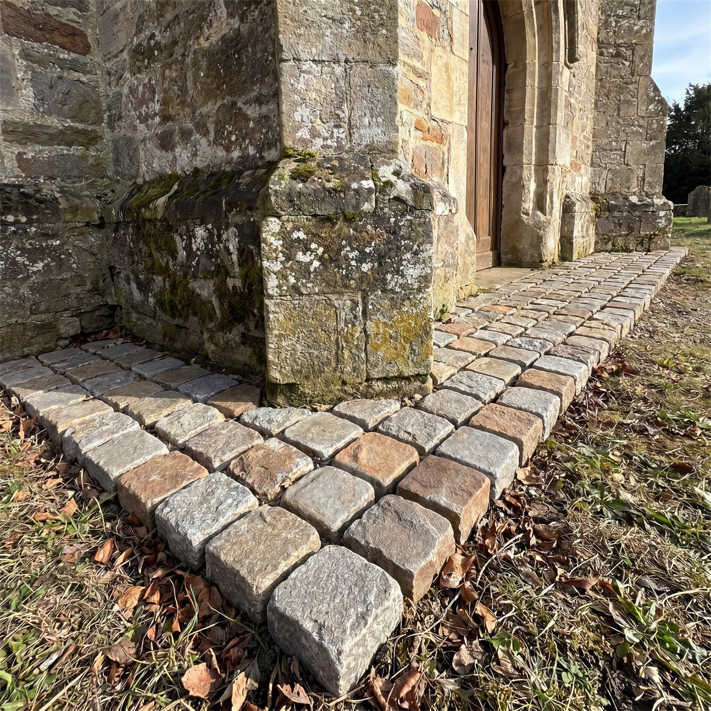
Бордюрные элементы
Пиленые форматы с фаской и без фаски для дорожек, въездов и ландшафтных линий.Для профессионалов
Удобно дилерам, строителям, ландшафтным бюро и архитекторам
Дилерам
Стабильные партии, понятная цена производителя, каталог и материалы для продаж.
Строительным компаниям
Подбор формата, объемов и поставки под график объекта.
Архитекторам
Фактура, цвет, образцы и спецификации для проектных решений.
Частным заказчикам
Помощь с выбором камня, который будет выглядеть достойно через годы.
Следующий шаг
Подберем камень под объект, бюджет и архитектурную задачу
Пришлите площадь, тип объекта и желаемую фактуру. Подготовим рекомендации, ориентир по стоимости и список материалов, которые стоит показать вживую.